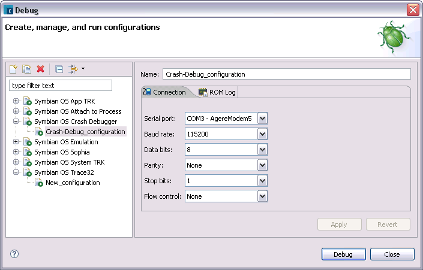
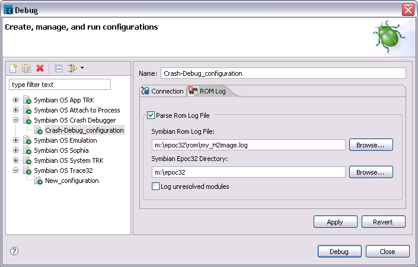
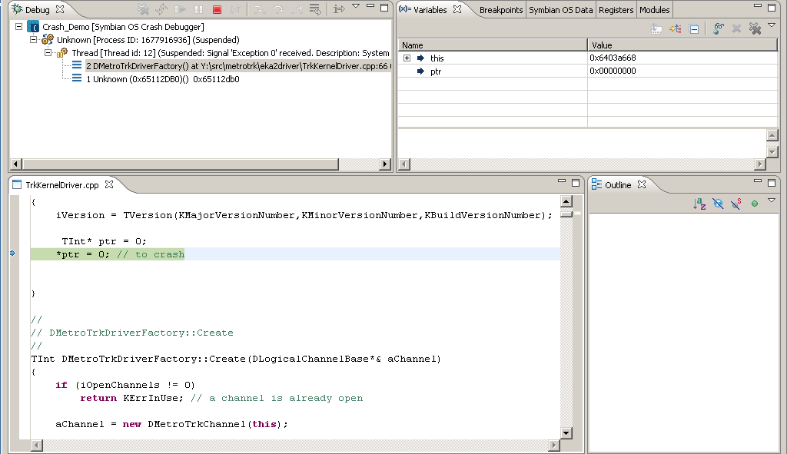

Use the Run or Debug window to define a launch configuration for the crash debugger. Select Run > Open Run Dialog... to open the Run window. Select Run > Open Debug Dialog... to open the Debug window (Figure 1). Select Symbian OS Crash Debugger and click the New launch configuration icon. In the Name field enter a unique name for your launch configuration. Specify your connection information and select the ROM Log tab (figure 2).

Figure 1 - Connection Tab
In the ROM Log pane specify a ROM log file that was generated when building the rom image. The ROM log file is necessary for finding out the address for each module in the rom log file. Specify the Symbian OS kit Epoc32 directory to resolve the full paths for the various modules in the rom log file. By specifying the rom log file and epoc32 path you will be able to view source code (figure 3) for the crash debug session.

Figure 2 - ROM Log Tab

Figure 3 - Crash Debug Source Code